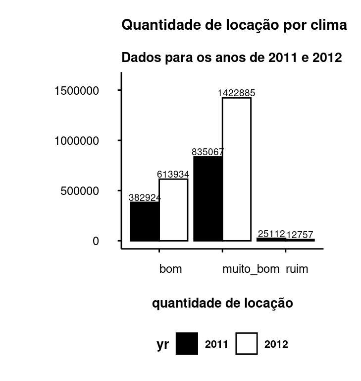

Predição de quantidade diária de bicicletas locadas pelo sistema Capital Bikeshare®
INTRODUÇÃO
Na busca por meios de transporte que permitam a mobilidade urbana de forma sustentável e que atendam às necessidades da sociedade para locomoção de pessoas sem comprometer os recursos naturais do planeta, encontra-se as bicicletas.
Aqueles que as escolhem adotam um novo estilo de vida repleto de vantagens.
No Brasil, segundo o artigo de Oliveira da Silva (2012), o percentual médio nacional de uso de bicicletas, entre todos os modos de locomoção, é de 7%. Uma forma de aumentar este percentual nos centros urbanos é o compartilhamento de bicicletas por meio de sistemas que implementam serviços de locação como o Capital Bikeshare®.
Capital Bikeshare® é um sistema de compartilhamento de bicicletas do metrô de Washington, nos Estados Unidos, com mais de 5.000 bicicletas disponíveis em 600 estações e sete jurisdições: Washington, DC; Arlington, VA; Alexandria, VA; Montgomery County, MD; Prince George’s County, MD; Fairfax County, VA e Falls Church city, VA.
A partir da base de dados ‘days.csv’, fornecida pela empresa Motivate®, responsável pela gestão do sistema, e disponível em «Bike Sharing Dataset» (2018), construirei um modelo preditivo para a quantidade de bicicletas compartilhadas/locadas pelos usuários, por meio de uma modelagem de regressão linear, utilizando variáveis como: condições climáticas, precipitação, dia da semana, estações do ano, mês, dias úteis, feriados, temperatura, umidade etc., que podem ou não influenciar no comportamento dos usuários de um serviço de compartilhamento de bicicletas.
ANÁLISE EXPLORATÓRIA DOS DADOS
Originalmente a base de dados é composta por 731 observações e 17 variáveis. Foram criadas as variáveis temp_real (temperatura real), hum_real (umidade real) e windspeed_real (velocidade do vento real) para se entender a relação entre as variáveis temperatura, umidade e velocidade do vento com a variável quantidade de bicicletas locadas (figuras 02, 03 e 04), haja vista que os dados destas variáveis encontram-se inicialmente normalizadas.
| variável | descrição | tipo_dado | exemplo | % NULL |
|---|---|---|---|---|
| dteday | data (YYYY-MM-DD) |
data | 2012-12-23 | 0 |
| season | estação 1-springer, 2-summer, 3-fall,4-winter |
categórica | 1,2,4 | 0 |
| yr | ano 0-2011, 1-2012 |
categórica | 0,1 | 0 |
| mnth | month (1 a 12) |
inteira | 1,2,3…12 | 0 |
| holiday | feriado 0-não, 1 - sim |
categórica | 0,1 | 0 |
| weekday | dia da semana 0-segunda, 1-terça, 2-quarta, 3-quinta, 4-sexta 5-sábado, 6-domingo |
categórica | 0,6,3 | 0 |
| workingday | dia útil 0-não dia útil (= feriado ou =fim de semana) 1-dia útil (= não feriado ou = não fim de semana) |
categórica | 0,1 | 0 |
| weathersit | situação do tempo 1-claro, pouca nuvens e parcialmente nublado 2-névoa, nublado ou poucas nuvens 3-neve ou chuva leves com trovoadas 4-chuva ou neve pesadas com trovoada |
categórica | 1,2,3,4 | 0 |
| temp_norm | temperatura normalizada em celsius temp=(t-tmin)/(tmax-tmin), tmin=-8 e tmax=+39 |
quantitativa | 0.08, 0.22 | 0 |
| atemp | sensação térmica normalizada em celsius atemp=(t-tmin)/(tmax-tmin), tmin=-16 e tmax=+50 |
quantitativa | 0.09, 0.303 | 0 |
| hum_norm | umidade normalizada valores divididos por 100 (máx.) |
quantitativa | 0.53, 0.8 | 0 |
| windspeed_norm | velocidade do vento normalizada valores divididos por 67 (máx.) |
quantitativa | 0.194, 0.2985 | 0 |
| casual | quantidade de usuários classificados como casuais | quantitativa | 0, 57 | 0 |
| registered | quantidade de usuários classificados como registrados | quantitativa | 1, 118 | 0 |
| cnt | quantidade total de bicicletas alugadas, incluindo casuais e registradas |
quantitativa | 1, 175 | 0 |
| temp_real | temperatura real em celsius temp_real=47*temp_norm-8 |
quantitativa | -3, 26 | 0 |
| hum_real | umidade real umidade_real= umidade_norm*100 |
quantitativa | 47.04, 86.25 | 0 |
| windspeed_real | velocidade do vento real windspeed_real=windspeed_norm*67 |
quantitativa | 10.75,23.67 | 0 |
As cinco primeiras linhas da base de dados podem ser vistas abaixo.
knitr::kable(dados[1:5, 1:18])| dteday | season | yr | mnth | holiday | weekday | workingday | weathersit | temp_norm | hum_norm | windspeed_norm | casual | registered | cnt | temp_real | atemp_norm_calc | hum_real | windspeed_real |
|---|---|---|---|---|---|---|---|---|---|---|---|---|---|---|---|---|---|
| 2011-01-01 | winter | 2011 | jan | no | saturday | no | weather2 | 0.344167 | 0.805833 | 0.160446 | 331 | 654 | 985 | 8 | 0.3636364 | 80.58 | 10.75 |
| 2011-01-02 | winter | 2011 | jan | no | sunday | no | weather2 | 0.363478 | 0.696087 | 0.248539 | 131 | 670 | 801 | 9 | 0.3787879 | 69.61 | 16.65 |
| 2011-01-03 | winter | 2011 | jan | no | monday | yes | weather1 | 0.196364 | 0.437273 | 0.248309 | 120 | 1229 | 1349 | 1 | 0.2575758 | 43.73 | 16.64 |
| 2011-01-04 | winter | 2011 | jan | no | tuesday | yes | weather1 | 0.200000 | 0.590435 | 0.160296 | 108 | 1454 | 1562 | 1 | 0.2575758 | 59.04 | 10.74 |
| 2011-01-05 | winter | 2011 | jan | no | wednesday | yes | weather1 | 0.226957 | 0.436957 | 0.186900 | 82 | 1518 | 1600 | 3 | 0.2878788 | 43.70 | 12.52 |
ANÁLISE DE DISTRIBUIÇÃO DE FREQUÊNCIAS DE LOCAÇÃO
Em nosso estudo, a variável resposta será a quantidade de locações de bicicletas (cnt) e esta possui as seguintes medidas de posição:
summary(dados[['cnt']]) Min. 1st Qu. Median Mean 3rd Qu. Max.
22 3152 4548 4504 5956 8714 Observe que a média e a mediana possuem valores próximos e que as quantidades mínima e máxima possuem valores entre 22 e 8714 bicicletas locadas. A figura 01 apresenta o histograma da distribuição da variável de interesse com assimetria negativa.
Código
pallete_2cores <- c("#000000", "#FFFFFF")
plot01 <- dados |>
dplyr::filter(yr == 2012) |>
ggplot2::ggplot() +
ggplot2::aes(x = cnt) +
ggplot2::geom_histogram(
ggplot2::aes(y = ..density..),
bins = 15,
fill = "#FFFFFF",
color = "#000000"
) +
ggplot2::labs(
title = "Histograma do total de locações (cnt)",
x = "quantidade de locações",
y = ""
) +
ggplot2::geom_density(
lwd = 1, colour = "#1F487E",
alpha = 0.15
) +
ggplot2::theme_classic()
plot01
ANÁLISE DA VARIÁVEL TEMPERATURA
Código
p2_1 <- dados |>
dplyr::select(temp_real) |>
ggplot2::ggplot(ggplot2::aes(x = temp_real)) +
ggplot2::geom_boxplot(
fill = "#FFFFFF",
alpha = 1,
color = "#000000"
) +
ggplot2::labs(
title = "",
x = "",
y = ""
) +
theme_enem_fundo_branco() +
ggplot2::theme(plot.margin = ggplot2::unit(c(0, 0, 0, 0), "cm")) +
ggplot2::theme(
# panel.grid = ggplot2::element_line(color = "#000000"),
plot.margin = ggplot2::unit(c(0, 1, 0, 0), "cm"),
axis.text.x = ggplot2::element_text( # texto do eixo x
color = "#FFFFFF",
size = 9,
face = "plain",
margin = ggplot2::unit(c(0.3, 0.5, 0.5, 0), "cm")
),
axis.text.y = ggplot2::element_text( # texto do eixo y
color = "#FFFFFF",
size = 7,
face = "plain",
family = "",
margin = ggplot2::unit(c(0, 0.5, 0, 0.5), "cm")
)
) +
ggplot2::theme_classic() +
ggplot2::scale_x_continuous(breaks = seq(0, 35, 5))
p2_2 <- dados |>
dplyr::select(temp_real) |>
ggplot2::ggplot(ggplot2::aes(x = temp_real)) +
ggplot2::geom_histogram(
fill = "#FFFFFF",
color = "#000000",
alpha = 1
) +
ggplot2::labs(
title = "Temperaturas Reais",
x = "",
y = ""
) +
theme_enem_fundo_branco() +
ggplot2::theme(
plot.margin = ggplot2::unit(c(1, 1.2, 0.5, 0), "cm")
) +
ggplot2::theme_classic() +
ggplot2::scale_x_continuous(breaks = seq(0, 35, 5))
layout <- c(
area(t = 5, l = 1, b = 5, r = 5),
area(t = 1, l = 1, b = 4, r = 5)
)
p2 <- p2_1 + p2_2 + plot_layout(design = layout)
p2Código
fabs_loc_velocidade <- dados |>
dplyr::select(windspeed_real) |>
table()
intervalo_classes_velocidade <- seq(-5, 35, 10)
tab_classes_velocidade <- table(cut(dados$windspeed_real,
breaks = intervalo_classes_velocidade,
right = FALSE
)) |>
prop.table() |>
data.frame() |>
dplyr::mutate(Freq = round(Freq * 100, 1))
tab_classes_velocidade |>
knitr::kable()| Var1 | Freq |
|---|---|
| [-5,5) | 4.2 |
| [5,15) | 65.8 |
| [15,25) | 27.6 |
| [25,35) | 2.3 |
A base possui temperatura mínima de -5ºC, temperatura máxima de 32ºC, média de 15.3ºC, mediana de 15ºC e moda de 26ºC.
Na tabela de distribuição de frequência de temperaturas ao lado, abserva-se que 65.8% das locações ocorreram entre as temperaturas 5ºC e 14ºC.
Em temperaturas muito baixas (-5ºC a 4ºC) ou muito altas (25ºC a 34ºC) a locação de bicicletas é pequena (entre 2% e 4%).
ANÁLISE DA VARIÁVEL UMIDADE
Código
p3_1 <- dados |>
dplyr::select(hum_real) |>
ggplot2::ggplot(ggplot2::aes(x = hum_real)) +
ggplot2::geom_boxplot(
fill = "#FFFFFF",
alpha = 1,
color = "#000000"
) +
ggplot2::labs(
title = "",
x = "",
y = ""
) +
theme_enem_fundo_branco() +
ggplot2::theme(plot.margin = ggplot2::unit(c(0, 0, 0, 0), "cm")) +
ggplot2::theme(
# panel.grid = ggplot2::element_line(color = "#000000"),
plot.margin = ggplot2::unit(c(0, 1, 0, 0), "cm"),
axis.text.x = ggplot2::element_text( # texto do eixo x
color = "#FFFFFF",
size = 9,
face = "plain",
margin = ggplot2::unit(c(0.3, 0.5, 0.5, 0), "cm")
),
axis.text.y = ggplot2::element_text( # texto do eixo y
color = "#FFFFFF",
size = 7,
face = "plain",
family = "",
margin = ggplot2::unit(c(0, 0.5, 0, 0.5), "cm")
)
) +
ggplot2::theme_classic() +
ggplot2::scale_x_continuous(breaks = seq(0, 100, 5))
p3_2 <- dados |>
dplyr::select(hum_real) |>
ggplot2::ggplot(ggplot2::aes(x = hum_real)) +
ggplot2::geom_histogram(
fill = "#FFFFFF",
color = "#000000",
alpha = 1
) +
ggplot2::labs(
title = "Umidades Reais",
x = "",
y = ""
) +
theme_enem_fundo_branco() +
ggplot2::theme(
plot.margin = ggplot2::unit(c(1, 1.2, 0.5, 0), "cm")
) +
ggplot2::theme_classic() +
ggplot2::scale_x_continuous(breaks = seq(0, 100, 5))
layout <- c(
area(t = 5, l = 1, b = 5, r = 5),
area(t = 1, l = 1, b = 4, r = 5)
)
p3 <- p3_1 + p3_2 + plot_layout(design = layout)
p3Código
fabs_loc_umidade <- dados |>
dplyr::select(hum_real) |>
table()
intervalo_classes_umidade <- seq(0, 100, 10)
tab_classes_umidade <- table(cut(dados$hum_real,
breaks = intervalo_classes_umidade,
right = FALSE
)) |>
prop.table() |>
data.frame() |>
dplyr::mutate(Freq = round(Freq * 100, 1))
tab_classes_umidade |>
knitr::kable()| Var1 | Freq |
|---|---|
| [0,10) | 0.1 |
| [10,20) | 0.1 |
| [20,30) | 0.4 |
| [30,40) | 3.3 |
| [40,50) | 16.0 |
| [50,60) | 23.9 |
| [60,70) | 24.5 |
| [70,80) | 19.0 |
| [80,90) | 9.8 |
| [90,100) | 2.7 |
A umidade relativa do ar mínima é de 0%, a máxima de 97.25%, a média de 62.8%, a mediana de 62.7% e as modas 59.04% e 61.33%.
As maiores quantidades de locações (cerca de 83.4%) ocorrem em umidades entre 40% e 79%.
A umidade relativa está diretamente relacionada ao conforto. Quando o usuário pedala, seu organismo produz gotas de suor para levar o calor gerado para a superfície da pele e então evaporá-las. Com umidades relativas altas, acima de 70%, a evaporação é dificultada produzindo sensação de desconforto. Umidades relativas baixas, abaixo de 30%, também exigem cuidados especiais para evitar a desidratação e mal estar.
ANÁLISE DA VARIÁVEL VELOCIDADE DO VENTO
Código
p4_1 <- dados |>
dplyr::select(windspeed_real) |>
ggplot2::ggplot(ggplot2::aes(x = windspeed_real)) +
ggplot2::geom_boxplot(
fill = "#FFFFFF",
alpha = 1,
color = "#000000"
) +
ggplot2::labs(
title = "",
x = "",
y = ""
) +
theme_enem_fundo_branco() +
ggplot2::theme(plot.margin = ggplot2::unit(c(0, 0, 0, 0), "cm")) +
ggplot2::theme(
# panel.grid = ggplot2::element_line(color = "#000000"),
plot.margin = ggplot2::unit(c(0, 1, 0, 0), "cm"),
axis.text.x = ggplot2::element_text( # texto do eixo x
color = "#FFFFFF",
size = 9,
face = "plain",
margin = ggplot2::unit(c(0.3, 0.5, 0.5, 0), "cm")
),
axis.text.y = ggplot2::element_text( # texto do eixo y
color = "#FFFFFF",
size = 7,
face = "plain",
family = "",
margin = ggplot2::unit(c(0, 0.5, 0, 0.5), "cm")
)
) +
ggplot2::theme_classic() +
ggplot2::scale_x_continuous(breaks = seq(0, 35, 5))
p4_2 <- dados |>
dplyr::select(windspeed_real) |>
ggplot2::ggplot(ggplot2::aes(x = windspeed_real)) +
ggplot2::geom_histogram(
fill = "#FFFFFF",
color = "#000000",
alpha = 1
) +
ggplot2::labs(
title = "Velocidades Reais",
x = "",
y = ""
) +
theme_enem_fundo_branco() +
ggplot2::theme(
plot.margin = ggplot2::unit(c(1, 1.2, 0.5, 0), "cm")
) +
ggplot2::theme_classic() +
ggplot2::scale_x_continuous(breaks = seq(0, 35, 5))
layout <- c(
area(t = 5, l = 1, b = 5, r = 5),
area(t = 1, l = 1, b = 4, r = 5)
)
p4 <- p4_1 + p4_2 + plot_layout(design = layout)
p4Código
fabs_loc_velocidade <- dados |>
dplyr::select(windspeed_real) |>
table()
intervalo_classes_velocidade <- seq(0, 35, 5)
tab_classes_velocidade <- table(cut(dados$windspeed_real,
breaks = intervalo_classes_velocidade,
right = FALSE
)) |>
prop.table() |>
data.frame() |>
dplyr::mutate(Freq = round(Freq * 100, 1))
tab_classes_velocidade |>
knitr::kable()| Var1 | Freq |
|---|---|
| [0,5) | 4.2 |
| [5,10) | 28.9 |
| [10,15) | 36.9 |
| [15,20) | 20.2 |
| [20,25) | 7.4 |
| [25,30) | 2.2 |
| [30,35) | 0.1 |
A velocidade do vento mínima é de 1.5 km/h, a máxima de 34 km/h, a média de 12.8 km/h, a mediana de 12.1 km/h e a moda de 9.04 km/h.
O vento contrário dificulta o deslocamento e pode provocar maior desgaste do usuário. Dias com fortes ventos podem influenciar as locações.
A maioria das locações ocorrem com velocidades entre 5 km/h e 19 km/h.
ANÁLISE DE POR ESTAÇÃO DO ANO
Código
plot02 <- dados |>
dplyr::select(season, cnt, yr) |>
dplyr::group_by(season, yr) |>
dplyr::summarise(qte = sum(cnt)) |>
ggplot2::ggplot() +
ggplot2::aes(
x = season,
y = qte,
fill = yr
) +
ggplot2::geom_col(
position = "dodge",
color = "#000000",
alpha = 0.7
) +
ggplot2::scale_fill_manual(values = pallete_2cores) +
ggplot2::theme_classic() +
ggplot2::labs(
title = "Total de locação por estações",
subtitle = "Dados para os anos de 2011 e 2012",
x = "",
y = ""
) +
ggplot2::theme(legend.position = "bottom") +
theme_enem_fundo_branco()
plot03 <- dados |>
dplyr::filter(yr == 2011) |>
dplyr::select(cnt, season) |>
ggplot2::ggplot() +
ggplot2::aes(x = season, y = cnt) +
ggplot2::geom_boxplot() +
ggplot2::labs(
title = "Locações de 2011 por estações",
y = "",
x = ""
) +
ggplot2::scale_fill_manual(values = pallete_2cores) +
ggplot2::theme_classic() +
theme_enem_fundo_branco() +
ggplot2::theme(legend.position = "none") +
ggplot2::theme(
legend.position = "none",
axis.text.x = ggplot2::element_text(angle = 0, vjust = 0.1)
) +
ggplot2::scale_y_continuous(limits = c(0, 8000))
plot04 <- dados |>
dplyr::filter(yr == 2012) |>
dplyr::select(cnt, season) |>
ggplot2::ggplot() +
ggplot2::aes(x = season, y = cnt) +
ggplot2::geom_boxplot() +
ggplot2::labs(
title = "Locações de 2012 por estações",
y = "",
x = ""
) +
ggplot2::scale_fill_manual(values = pallete_2cores) +
ggplot2::theme_classic() +
theme_enem_fundo_branco() +
ggplot2::theme(
legend.position = "none",
axis.text.x = ggplot2::element_text(angle = 0, vjust = 0.1)
) +
ggplot2::scale_y_continuous(limits = c(0, 8000))
plot02
plot03
plot04Percebe-se que as estações do ano influenciam a quantidade de locações realizadas. A figura 5 mostra que a demanda é maior no verão e outono e menor no inverno.
ANÁLISE DE LOCAÇÃO POR DIAS ÚTEIS OU NÃO ÚTEIS
Código
plot05 <- dados |>
dplyr::select(cnt, workingday, yr) |>
dplyr::group_by(workingday, yr) |>
dplyr::summarise(qtde = sum(cnt)) |>
ggplot2::ggplot() +
ggplot2::aes(x = workingday, y = qtde, fill = yr, label = qtde) +
ggplot2::geom_col(position = "dodge", color = "#000000", alpha = 0.7) +
ggplot2::geom_text(position = ggplot2::position_dodge(0.9), vjust = -0.2, size = 3.5) +
ggplot2::scale_y_continuous(limits = c(0, 1600000)) +
ggplot2::scale_fill_manual(values = pallete_2cores) +
ggplot2::theme_classic() +
ggplot2::labs(
title = "Locações por dias úteis",
subtitle = "Dados para os anos de 2011 e 2012",
x = "dias úteis",
y = ""
) +
ggplot2::theme(
legend.position = "bottom",
) +
theme_enem_fundo_branco()
plot06 <- dados |>
dplyr::filter(yr == 2011) |>
dplyr::select(cnt, workingday) |>
ggplot2::ggplot() +
ggplot2::aes(x = workingday, y = cnt) +
ggplot2::geom_boxplot() +
ggplot2::labs(
title = "Locações de 2011 por dias úteis",
y = "",
x = ""
) +
ggplot2::scale_fill_manual(values = pallete_2cores) +
ggplot2::theme_classic() +
theme_enem_fundo_branco() +
ggplot2::theme(legend.position = "none") +
ggplot2::theme(
legend.position = "none"
) +
ggplot2::scale_y_continuous(limits = c(0, 8000))
plot07 <- dados |>
dplyr::filter(yr == 2012) |>
dplyr::select(cnt, workingday) |>
ggplot2::ggplot() +
ggplot2::aes(x = workingday, y = cnt) +
ggplot2::geom_boxplot() +
ggplot2::labs(
title = "Locações de 2012 por dias úteis",
y = "",
x = ""
) +
ggplot2::scale_fill_manual(values = pallete_2cores) +
ggplot2::theme_classic() +
ggplot2::theme(
legend.position = "none"
) +
ggplot2::scale_y_continuous(limits = c(0, 8000)) +
theme_enem_fundo_branco()
plot05
plot06
plot07

Diferentemente das estações do ano, aparentemente a variável ‘dia úteis’ (workingday) não é significativa para o modelo.
ANÁLISE DE LOCAÇÃO POR SITUAÇÃO CLIMÁTICA DO DIA
Código
plot08 <- dados |>
dplyr::select(cnt, weathersit, tempo, yr) |>
dplyr::group_by(tempo, yr) |>
dplyr::summarise(qte = sum(cnt)) |>
ggplot2::ggplot() +
ggplot2::aes(x = tempo, y = qte, fill = yr, label = qte) +
ggplot2::geom_col(
position = "dodge", colour = "#000000"
) +
ggplot2::geom_text(position = ggplot2::position_dodge(0.9), vjust = -0.2, size = 2.5) +
ggplot2::scale_fill_manual(values = pallete_2cores) +
ggplot2::scale_y_continuous(limits = c(0, 1600000)) +
ggplot2::theme_classic() +
ggplot2::labs(
title = "Quantidade de locação por clima",
subtitle = "Dados para os anos de 2011 e 2012",
x = "quantidade de locação",
y = ""
) +
theme_enem_fundo_branco() +
ggplot2::theme(legend.position = "bottom")
plot09 <- dados |>
dplyr::filter(yr == 2011) |>
dplyr::select(cnt, tempo) |>
ggplot2::ggplot() +
ggplot2::aes(x = tempo, y = cnt) +
ggplot2::geom_boxplot() +
ggplot2::labs(
title = "Locações de 2011 por clima",
y = "",
x = ""
) +
ggplot2::scale_fill_manual(values = pallete_2cores) +
ggplot2::theme_classic() +
theme_enem_fundo_branco() +
ggplot2::theme(legend.position = "none") +
ggplot2::theme(
legend.position = "none"
) +
ggplot2::scale_y_continuous(limits = c(0, 8000))
plot10 <- dados |>
dplyr::filter(yr == 2012) |>
dplyr::select(cnt, tempo) |>
ggplot2::ggplot() +
ggplot2::aes(x = tempo, y = cnt) +
ggplot2::geom_boxplot() +
ggplot2::labs(
title = "Locações de 2012 por clima",
y = "",
x = ""
) +
ggplot2::scale_fill_manual(values = pallete_2cores) +
ggplot2::theme_classic() +
theme_enem_fundo_branco() +
ggplot2::theme(legend.position = "none") +
ggplot2::theme(
legend.position = "none"
) +
ggplot2::scale_y_continuous(limits = c(0, 8000))
plot08
plot09
plot10
ANÁLISE DE LOCAÇÃO POR FERIADOS OU NÃO FERIADOS
Código
plot11 <- dados |>
dplyr::select(cnt, holiday, yr) |>
dplyr::group_by(holiday, yr) |>
dplyr::summarise(qtde = sum(cnt)) |>
ggplot2::ggplot() +
ggplot2::aes(x = holiday, y = qtde, fill = yr, label = qtde) +
ggplot2::geom_col(position = "dodge", color = "#000000", alpha = 0.7) +
ggplot2::geom_text(position = ggplot2::position_dodge(0.9), vjust = -0.2, size = 3.5) +
ggplot2::scale_y_continuous(limits = c(0, 2100000)) +
ggplot2::scale_fill_manual(values = pallete_2cores) +
ggplot2::theme_classic() +
ggplot2::labs(
title = "Locações por feriados ou não",
subtitle = "Dados para os anos de 2011 e 2012",
x = "feriados",
y = ""
) +
ggplot2::theme(
legend.position = "bottom",
) +
theme_enem_fundo_branco()
plot12 <- dados |>
dplyr::filter(yr == 2011) |>
dplyr::select(cnt, holiday) |>
ggplot2::ggplot() +
ggplot2::aes(x = holiday, y = cnt) +
ggplot2::geom_boxplot() +
ggplot2::labs(
title = "Locações de 2011 por feriados",
y = "",
x = ""
) +
ggplot2::scale_fill_manual(values = pallete_2cores) +
ggplot2::theme_classic() +
theme_enem_fundo_branco() +
ggplot2::theme(legend.position = "none") +
ggplot2::theme(
legend.position = "none"
) +
ggplot2::scale_y_continuous(limits = c(0, 8000))
plot13 <- dados |>
dplyr::filter(yr == 2012) |>
dplyr::select(cnt, holiday) |>
ggplot2::ggplot() +
ggplot2::aes(x = holiday, y = cnt) +
ggplot2::geom_boxplot() +
ggplot2::labs(
title = "Locações de 2012 por feriados",
y = "",
x = ""
) +
ggplot2::scale_fill_manual(values = pallete_2cores) +
ggplot2::theme_classic() +
ggplot2::theme(
legend.position = "none"
) +
ggplot2::scale_y_continuous(limits = c(0, 8000)) +
theme_enem_fundo_branco()
plot11
plot12
plot13
Da mesma forma que a variável ‘dias úteis’ (workingday), aparentemente a variável ‘feriado’ (holliday) também não é significativa para o modelo.
As significâncias das variáveis serão analisadas no momento da modelagem.
ANÁLISE DE CORRELAÇÃO E COMBINAÇÃO LINEAR
Correlação é um parâmetro estatístico utilizado para medir a relação linear entre duas variáveis. Seu valor encontra-se no intervalo de -1 a +1. Quando a correlação assume valor negativo, indica que as variáveis possuem relação inversamente proporcional e vice-versa.
A figura 09 “é uma matriz em que os elementos são painéis com gráficos de dispersão para cada par de variáveis. Muitas vezes, incluem-se coeficientes de correlação entre os diferentes pares de variáveis nos paineis situados acima ou abaixo da diagonal”. Morettin e Singer (2022)”
Na modelagem dos dados é necessário verificar o relacionamento entre as variáveis preditoras e a variável resposta.
Código
plot11 <- psych::pairs.panels(dados[c(
"temp_norm",
"atemp_norm_calc",
"hum_norm",
"windspeed_norm",
"casual",
"registered",
"cnt"
)])Nota-se forte correlação positiva entre as variáveis preditoras temperatura e sensação térmica, bem como entre a variável preditora registered (usuários membros) e a variável resposta cnt (total de bicicletas locadas).
Por meio do pacote “caret”, pode-se verificar a existência de combinação linear entre variáveis.
x <- dados |>
dplyr::select(temp_norm, atemp_norm_calc, hum_norm, windspeed_norm, casual, registered, cnt)
caret::findLinearCombos(x)$linearCombos
$linearCombos[[1]]
[1] 7 5 6
$remove
[1] 7Constata-se, desta forma, a existência de combinação linear entre as variáveis usuário casual (casual), usuário membro registrado (“registered”) e a variável resposta (cnt).
VERIFICAÇÃO DE INTERAÇÕES ENTRE VARIÁVEIS PREDITORAS
SITUAÇÃO METEOROLÓGICA E VARIÁVEIS TEMPERATURA, HUMIDADE E VELOCIDADE DO VENTO
Código
paleta_quatro_cores <- c('#000000','#A288A6','#488B49','#6F89D8')
plot12 <- dados |>
dplyr::select(cnt, temp_norm, weathersit) |>
ggplot2::ggplot() +
ggplot2::aes(y = cnt, x = temp_norm, color = weathersit) +
ggplot2::scale_color_manual(values = paleta_quatro_cores)+
ggplot2::geom_point() +
ggplot2::geom_smooth(
method = "lm",
se = FALSE
) +
ggplot2::theme_classic() +
ggplot2::labs(
x = "x = temp_norm",
y = "y = cnt"
) +
ggplot2::theme(legend.position = "right")
plot13 <- dados |>
dplyr::select(cnt, hum_norm, weathersit) |>
ggplot2::ggplot() +
ggplot2::aes(y = cnt, x = hum_norm, color = weathersit) +
ggplot2::scale_color_manual(values = paleta_quatro_cores)+
ggplot2::geom_point() +
ggplot2::geom_smooth(
method = "lm",
se = FALSE
) +
ggplot2::theme_classic() +
ggplot2::labs(
x = "x = hum_norm",
y = "y = cnt"
) +
ggplot2::theme(legend.position = "right")
plot14 <- dados |>
dplyr::select(cnt, windspeed_norm, weathersit) |>
ggplot2::ggplot() +
ggplot2::aes(y = cnt, x = windspeed_norm, color = weathersit) +
ggplot2::scale_color_manual(values = paleta_quatro_cores)+
ggplot2::geom_point() +
ggplot2::geom_smooth(
method = "lm",
se = FALSE
) +
ggplot2::theme_classic() +
ggplot2::labs(
x = "x = windspeed_norm",
y = "y = cnt"
) +
ggplot2::theme(legend.position = "right")
plot12
plot13
plot14


ESTAÇÃO E VARIÁVEIS TEMPERATURA, UMIDADE E VELOCIDADE DO VENTO
Código
plot15 <- dados |>
dplyr::select(cnt, temp_norm, season) |>
ggplot2::ggplot() +
ggplot2::aes(y = cnt, x = temp_norm, color = season) +
ggplot2::scale_color_manual(values = paleta_quatro_cores)+
ggplot2::geom_point() +
ggplot2::geom_smooth(
method = "lm",
se = FALSE
) +
ggplot2::theme_classic() +
ggplot2::labs(
x = "x = temp_norm",
y = "y = cnt"
) +
ggplot2::theme(legend.position = "right")
plot16 <- dados |>
dplyr::select(cnt, hum_norm, season) |>
ggplot2::ggplot() +
ggplot2::aes(y = cnt, x = hum_norm, color = season) +
ggplot2::scale_color_manual(values = paleta_quatro_cores)+
ggplot2::geom_point() +
ggplot2::geom_smooth(
method = "lm",
se = FALSE
) +
ggplot2::theme_classic() +
ggplot2::labs(
x = "x = hum_norm",
y = "y = cnt"
) +
ggplot2::theme(legend.position = "right")
plot17 <- dados |>
dplyr::select(cnt, windspeed_norm, season) |>
ggplot2::ggplot() +
ggplot2::aes(y = cnt, x = windspeed_norm, color = season) +
ggplot2::scale_color_manual(values = paleta_quatro_cores)+
ggplot2::geom_point() +
ggplot2::geom_smooth(
method = "lm",
se = FALSE
) +
ggplot2::theme_classic() +
ggplot2::labs(
x = "x = windspeed_norm",
y = "y = cnt"
) +
ggplot2::theme(legend.position = "right")
plot15
plot16
plot17


ESTAÇÃO E CLIMA, CLIMA E HOLIDAY E CLIMA E WEEKDAY
Código
plot15 <- dados |>
dplyr::select(cnt, weathersit, season) |>
ggplot2::ggplot() +
ggplot2::aes(y = cnt, x = weathersit, fill = season) +
ggplot2::scale_fill_manual(values = paleta_quatro_cores)+
ggplot2::geom_boxplot() +
ggplot2::theme_classic() +
ggplot2::labs(
x = "x = weathersit",
y = "y = cnt"
) +
ggplot2::theme(legend.position = "right")
plot16 <- dados |>
dplyr::select(cnt, weathersit, holiday) |>
ggplot2::ggplot() +
ggplot2::aes(y = cnt, x = holiday, fill = weathersit) +
ggplot2::scale_fill_manual(values = paleta_quatro_cores)+
ggplot2::geom_boxplot() +
ggplot2::theme_classic() +
ggplot2::labs(
x = "x = holiday",
y = "y = cnt"
) +
ggplot2::theme(legend.position = "right")
plot17 <- dados |>
dplyr::select(cnt, weathersit, weekday) |>
ggplot2::ggplot() +
ggplot2::aes(y = cnt, x = weekday, fill = weathersit) +
ggplot2::scale_fill_manual(values = paleta_quatro_cores)+
ggplot2::geom_boxplot() +
ggplot2::theme_classic() +
ggplot2::labs(
x = "x = weekday",
y = "y = cnt"
) +
ggplot2::theme(legend.position = "right")
plot15
plot16
plot17MODELAGEM
Na modelagem, 80% dos dados foram utilizados para aprendizagem e 20% para teste.
set.seed(123)
indice <- sample(dim(dados)[1], size = 146)
treino <- dados[-indice, ]
teste <- dados[indice, ]MODELO 01
O modelo inicial contempla as variáveis quantitativas temp_norm, hum_norm, windspeed_norm. Excluiu-se do modelo as variáveis preditoras casual, registered em função de multilinearidade.
modelo01 <- lm(cnt ~ hum_norm + temp_norm + windspeed_norm, data = treino)
summary(modelo01)
Call:
lm(formula = cnt ~ hum_norm + temp_norm + windspeed_norm, data = treino)
Residuals:
Min 1Q Median 3Q Max
-4436.9 -1088.7 -84.7 1040.6 3666.2
Coefficients:
Estimate Std. Error t value Pr(>|t|)
(Intercept) 4513.7 381.7 11.826 < 2e-16 ***
hum_norm -3671.5 441.5 -8.316 6.48e-16 ***
temp_norm 6776.3 329.4 20.574 < 2e-16 ***
windspeed_norm -5413.6 784.8 -6.898 1.38e-11 ***
---
Signif. codes: 0 '***' 0.001 '**' 0.01 '*' 0.05 '.' 0.1 ' ' 1
Residual standard error: 1421 on 581 degrees of freedom
Multiple R-squared: 0.4704, Adjusted R-squared: 0.4676
F-statistic: 172 on 3 and 581 DF, p-value: < 2.2e-16Código
op <- par(bg = "#000000")
graphics::par(
mfrow = c(2, 2),
bty = "l",
col = "#ffffff"
)
plot(modelo01,
bg = par("bg"),
col.axis = "#FFFFFF",
col.lab = "thistle"
)Verificando analiticamente a heteroscedasticidade:
performance::check_heteroscedasticity(modelo01)Warning: Heteroscedasticity (non-constant error variance) detected (p < .001).Observa-se a ausência de homoscedasticidade.
Na figura 13, pode-se observar também que o modelo não possui linearidade entre as variáveis preditoras e resposta.
MODELO 02
Adiciona-se as variáveis qualitativas season, yr, holiday, workingday e weathersit, obtendo-se o modelo 02.
modelo02 <- lm(cnt ~ hum_norm + temp_norm + windspeed_norm + season + yr + holiday + weekday,
data = treino)
summary(modelo02)
Call:
lm(formula = cnt ~ hum_norm + temp_norm + windspeed_norm + season +
yr + holiday + weekday, data = treino)
Residuals:
Min 1Q Median 3Q Max
-4115.5 -468.1 68.5 543.3 1966.6
Coefficients:
Estimate Std. Error t value Pr(>|t|)
(Intercept) 3685.75 298.32 12.355 < 2e-16 ***
hum_norm -3305.77 292.44 -11.304 < 2e-16 ***
temp_norm 6864.16 385.96 17.785 < 2e-16 ***
windspeed_norm -4938.41 497.52 -9.926 < 2e-16 ***
seasonspringer -522.58 105.06 -4.974 8.69e-07 ***
seasonsummer -1246.13 141.72 -8.793 < 2e-16 ***
seasonwinter -1077.18 127.22 -8.467 < 2e-16 ***
yr2012 1977.83 74.67 26.488 < 2e-16 ***
holidayyes -802.02 215.95 -3.714 0.000224 ***
weekdaymonday 131.75 136.00 0.969 0.333081
weekdaytuesday 137.09 134.66 1.018 0.309091
weekdaywednesday 154.73 136.63 1.132 0.257930
weekdaythursday 320.73 135.55 2.366 0.018310 *
weekdayfriday 235.65 136.92 1.721 0.085773 .
weekdaysaturday 288.25 137.64 2.094 0.036675 *
---
Signif. codes: 0 '***' 0.001 '**' 0.01 '*' 0.05 '.' 0.1 ' ' 1
Residual standard error: 885.3 on 570 degrees of freedom
Multiple R-squared: 0.7983, Adjusted R-squared: 0.7934
F-statistic: 161.2 on 14 and 570 DF, p-value: < 2.2e-16Código
op <- par(bg = "#000000")
graphics::par(
mfrow = c(2, 2),
bty = "l",
col = "#ffffff"
)
plot(modelo02,
bg = par("bg"),
col.axis = "#FFFFFF",
col.lab = "thistle"
)
Verificando analiticamente a heteroscedasticidade:
performance::check_heteroscedasticity(modelo02)Warning: Heteroscedasticity (non-constant error variance) detected (p = 0.002).Constata-se que modelo não apresenta homocedasticidade, porém agora atende ao pressuposto de linearidade entre as variáveis e sem multicolinearidade, conforme valores abaixo.
Código
car::vif(modelo02) GVIF Df GVIF^(1/(2*Df))
hum_norm 1.231533 1 1.109745
temp_norm 3.639558 1 1.907763
windspeed_norm 1.123487 1 1.059947
season 3.859087 3 1.252413
yr 1.039953 1 1.019781
holiday 1.093863 1 1.045879
weekday 1.121091 6 1.009571MODELO 03
Inclui-se as interações entre as variáveis estação do ano x temperatura e estação do ano x umidade e adiciona-se as relações não lineares por meio das variáveis temp_linear, hum_linear e windspeed_linear.
temp_linear <- treino$temp_norm + treino$temp_norm^2 + treino$temp_norm^3
hum_linear <- treino$hum_norm + treino$hum_norm^2 + treino$hum_norm^3
windspeed_linear <- treino$windspeed_norm + treino$windspeed_norm^2
modelo03 <- lm(cnt ~ hum_linear +
temp_linear +
windspeed_linear +
season +
yr +
holiday +
weekday +
season * (. -mnth - atemp_norm_calc - workingday - temp_norm - hum_norm -
windspeed_norm - casual - registered - temp_real - hum_real -
windspeed_real - dteday - hum_qual - weekday - yr -weekday -
weathersit+ temp_linear + hum_linear), data = treino)
summary(modelo03)
Call:
lm(formula = cnt ~ hum_linear + temp_linear + windspeed_linear +
season + yr + holiday + weekday + season * (. - mnth - atemp_norm_calc -
workingday - temp_norm - hum_norm - windspeed_norm - casual -
registered - temp_real - hum_real - windspeed_real - dteday -
hum_qual - weekday - yr - weekday - weathersit + temp_linear +
hum_linear), data = treino)
Residuals:
Min 1Q Median 3Q Max
-3022.98 -410.02 4.53 445.86 2116.02
Coefficients:
Estimate Std. Error t value Pr(>|t|)
(Intercept) 4025.28 392.13 10.265 < 2e-16 ***
hum_linear -1361.60 219.96 -6.190 1.17e-09 ***
temp_linear 2854.53 221.18 12.906 < 2e-16 ***
windspeed_linear -2959.00 321.72 -9.197 < 2e-16 ***
seasonspringer -1649.29 456.72 -3.611 0.000333 ***
seasonsummer 4234.02 752.82 5.624 2.96e-08 ***
seasonwinter -3077.09 455.43 -6.756 3.60e-11 ***
yr2012 1898.63 67.83 27.993 < 2e-16 ***
holidayyes -1111.40 288.36 -3.854 0.000130 ***
weekdaymonday 168.17 120.46 1.396 0.163243
weekdaytuesday 231.19 120.25 1.922 0.055059 .
weekdaywednesday 267.48 122.13 2.190 0.028939 *
weekdaythursday 377.68 120.67 3.130 0.001841 **
weekdayfriday 292.53 121.89 2.400 0.016725 *
weekdaysaturday 354.56 122.04 2.905 0.003815 **
tempomuito_bom 194.96 170.79 1.142 0.254150
temporuim -980.66 330.96 -2.963 0.003177 **
seasonspringer:holidayyes 59.00 498.11 0.118 0.905754
seasonsummer:holidayyes 2171.71 631.51 3.439 0.000628 ***
seasonwinter:holidayyes 73.70 456.67 0.161 0.871853
seasonspringer:tempomuito_bom 157.43 250.82 0.628 0.530502
seasonsummer:tempomuito_bom 249.76 265.16 0.942 0.346643
seasonwinter:tempomuito_bom 165.26 234.51 0.705 0.481287
seasonspringer:temporuim -733.12 661.34 -1.109 0.268115
seasonsummer:temporuim -562.81 877.08 -0.642 0.521341
seasonwinter:temporuim 232.33 532.45 0.436 0.662755
temp_linear:seasonspringer -169.13 322.86 -0.524 0.600593
temp_linear:seasonsummer -4320.99 385.62 -11.205 < 2e-16 ***
temp_linear:seasonwinter 1420.95 471.39 3.014 0.002693 **
hum_linear:seasonspringer 792.46 272.71 2.906 0.003810 **
hum_linear:seasonsummer 460.10 324.03 1.420 0.156183
hum_linear:seasonwinter 898.73 268.64 3.345 0.000877 ***
---
Signif. codes: 0 '***' 0.001 '**' 0.01 '*' 0.05 '.' 0.1 ' ' 1
Residual standard error: 776.6 on 552 degrees of freedom
(1 observation deleted due to missingness)
Multiple R-squared: 0.8496, Adjusted R-squared: 0.8412
F-statistic: 100.6 on 31 and 552 DF, p-value: < 2.2e-16car::vif(modelo03) GVIF Df GVIF^(1/(2*Df))
hum_linear 11.360410 1 3.370521
temp_linear 12.034120 1 3.469023
windspeed_linear 1.270414 1 1.127126
season 48354.425742 3 6.035863
yr 1.113069 1 1.055021
holiday 2.534511 1 1.592015
weekday 1.304545 6 1.022402
tempo 16.342825 2 2.010628
season:holiday 2.879725 3 1.192775
season:tempo 779.946800 6 1.741829
temp_linear:season 5286.629940 3 4.173783
hum_linear:season 7395.654127 3 4.413971Verificando analiticamente a heteroscedasticidade:
performance::check_heteroscedasticity(modelo03)OK: Error variance appears to be homoscedastic (p = 0.972).Agora, o modelo 03 atende aos pressupostos de homoscedasticidade, de linearidade e de ausência de outliers influentes.
Código
op <- par(bg = "#000000")
graphics::par(
mfrow = c(2, 2),
bty = "l",
col = "#FFFFFF"
)
plot(modelo03,
bg = par("bg"),
col.axis = "#FFFFFF",
col.lab = "thistle"
)SELECAO DE MODELOS
Código
sjPlot::tab_model(modelo01, modelo02, modelo03)| cnt | cnt | cnt | |||||||
|---|---|---|---|---|---|---|---|---|---|
| Predictors | Estimates | CI | p | Estimates | CI | p | Estimates | CI | p |
| (Intercept) | 4513.74 | 3764.13 – 5263.35 | <0.001 | 3685.75 | 3099.81 – 4271.69 | <0.001 | 4025.28 | 3255.03 – 4795.52 | <0.001 |
| hum norm | -3671.49 | -4538.59 – -2804.38 | <0.001 | -3305.77 | -3880.16 – -2731.38 | <0.001 | |||
| temp norm | 6776.33 | 6129.45 – 7423.20 | <0.001 | 6864.16 | 6106.08 – 7622.25 | <0.001 | |||
| windspeed norm | -5413.59 | -6954.92 – -3872.25 | <0.001 | -4938.41 | -5915.61 – -3961.22 | <0.001 | |||
| season [springer] | -522.58 | -728.93 – -316.23 | <0.001 | -1649.29 | -2546.41 – -752.17 | <0.001 | |||
| season [summer] | -1246.13 | -1524.49 – -967.76 | <0.001 | 4234.02 | 2755.27 – 5712.77 | <0.001 | |||
| season [winter] | -1077.18 | -1327.06 – -827.29 | <0.001 | -3077.09 | -3971.68 – -2182.50 | <0.001 | |||
| yr [2012] | 1977.83 | 1831.17 – 2124.48 | <0.001 | 1898.63 | 1765.40 – 2031.86 | <0.001 | |||
| holiday [yes] | -802.02 | -1226.17 – -377.88 | <0.001 | -1111.40 | -1677.83 – -544.98 | <0.001 | |||
| weekday [monday] | 131.75 | -135.37 – 398.86 | 0.333 | 168.17 | -68.44 – 404.78 | 0.163 | |||
| weekday [tuesday] | 137.09 | -127.40 – 401.58 | 0.309 | 231.19 | -5.02 – 467.40 | 0.055 | |||
| weekday [wednesday] | 154.73 | -113.64 – 423.09 | 0.258 | 267.48 | 27.57 – 507.38 | 0.029 | |||
| weekday [thursday] | 320.73 | 54.49 – 586.97 | 0.018 | 377.68 | 140.65 – 614.71 | 0.002 | |||
| weekday [friday] | 235.65 | -33.27 – 504.57 | 0.086 | 292.53 | 53.11 – 531.96 | 0.017 | |||
| weekday [saturday] | 288.25 | 17.91 – 558.58 | 0.037 | 354.56 | 114.85 – 594.27 | 0.004 | |||
| hum linear | -1361.60 | -1793.66 – -929.54 | <0.001 | ||||||
| temp linear | 2854.53 | 2420.06 – 3288.99 | <0.001 | ||||||
| windspeed linear | -2959.00 | -3590.95 – -2327.05 | <0.001 | ||||||
| tempo [muito_bom] | 194.96 | -140.52 – 530.44 | 0.254 | ||||||
| tempo [ruim] | -980.66 | -1630.76 – -330.57 | 0.003 | ||||||
| season [springer] * holiday [yes] |
59.00 | -919.43 – 1037.43 | 0.906 | ||||||
| season [summer] * holiday [yes] |
2171.71 | 931.26 – 3412.16 | 0.001 | ||||||
| season [winter] * holiday [yes] |
73.70 | -823.32 – 970.72 | 0.872 | ||||||
| season [springer] * tempo [muito_bom] |
157.43 | -335.26 – 650.11 | 0.531 | ||||||
| season [summer] * tempo [muito_bom] |
249.76 | -271.09 – 770.62 | 0.347 | ||||||
| season [winter] * tempo [muito_bom] |
165.26 | -295.38 – 625.91 | 0.481 | ||||||
| season [springer] * tempo [ruim] |
-733.12 | -2032.16 – 565.93 | 0.268 | ||||||
| season [summer] * tempo [ruim] |
-562.81 | -2285.64 – 1160.01 | 0.521 | ||||||
| season [winter] * tempo [ruim] |
232.33 | -813.54 – 1278.21 | 0.663 | ||||||
| temp linear * season [springer] |
-169.13 | -803.31 – 465.05 | 0.601 | ||||||
| temp linear * season [summer] |
-4320.99 | -5078.45 – -3563.53 | <0.001 | ||||||
| temp linear * season [winter] |
1420.95 | 495.02 – 2346.88 | 0.003 | ||||||
| hum linear * season [springer] |
792.46 | 256.78 – 1328.14 | 0.004 | ||||||
| hum linear * season [summer] |
460.10 | -176.37 – 1096.58 | 0.156 | ||||||
| hum linear * season [winter] |
898.73 | 371.05 – 1426.40 | 0.001 | ||||||
| Observations | 585 | 585 | 584 | ||||||
| R2 / R2 adjusted | 0.470 / 0.468 | 0.798 / 0.793 | 0.850 / 0.841 | ||||||
Com base no coeficiente de determinação ajustado, pode-se concluir que o modelo 03 é o melhor, pois possui o maior \(R^{2}\) (0.841).
Alternativamente, pode-se avaliar os modelos segundo as métricas AIC (Akaike Information Criterion), cuja ideia básica é penalizar a inclusão de variáveis adicionais a um modelo e BIC (Bayesian Information Criterion), que é uma variante de AIC com penalidades mais fortes por incluir variáveis adicionais. Quanto menor estas métricas, melhor é o modelo.
A função glance do pacote broom nos fornece de forma consolidada os critérios.
Para o modelo 01
broom::glance(modelo01) |>
knitr::kable()| r.squared | adj.r.squared | sigma | statistic | p.value | df | logLik | AIC | BIC | deviance | df.residual | nobs |
|---|---|---|---|---|---|---|---|---|---|---|---|
| 0.470364 | 0.4676292 | 1420.992 | 171.9933 | 0 | 3 | -5074.652 | 10159.3 | 10181.16 | 1173165852 | 581 | 585 |
Para o modelo 02
broom::glance(modelo02) |>
knitr::kable()| r.squared | adj.r.squared | sigma | statistic | p.value | df | logLik | AIC | BIC | deviance | df.residual | nobs |
|---|---|---|---|---|---|---|---|---|---|---|---|
| 0.7983349 | 0.7933817 | 885.2562 | 161.1763 | 0 | 14 | -4792.219 | 9616.439 | 9686.384 | 446696743 | 570 | 585 |
Para o modelo 03
broom::glance(modelo03) |>
knitr::kable()| r.squared | adj.r.squared | sigma | statistic | p.value | df | logLik | AIC | BIC | deviance | df.residual | nobs |
|---|---|---|---|---|---|---|---|---|---|---|---|
| 0.8496065 | 0.8411605 | 776.5829 | 100.5926 | 0 | 31 | -4698.669 | 9463.337 | 9607.544 | 332900708 | 552 | 584 |
Pelas métricas AIC e BIC, o modelo 03 continua sendo o melhor entre os três modelos por possuir menores valores de AIC e BIC.
TESTE DO MODELO
É possível avaliar o modelo final por meio da métrica MAPE (erro percentual absoluto médio), que expressa a porcentagem obtida pela diferença entre o valor predito e o valor real, dividido pelo valor real.
Quanto menor o valor, mais preciso é o modelo de regressão.
p <- predict(modelo03, teste)
real <- teste$cnt
ape <- function(yreal, yprev) {
abs((yreal - yprev) / yreal)
}
resultado <- mean(ape(yreal = real, yprev = p))
resultado[1] 0.1960396Assim, tem-se que o modelo faz previsões com erro de 19.6%, e acerto de 80.4%.
CONCLUSÃO
O modelo inicial não atendia aos pressupostos de linearidade, homoscedasticidade e normalidade dos resíduos.
Com o acréscimo de variáveis, das interações entre estação, temperatura, umidade e adicionando-se as relações não lineares (polinomiais) nas variáveis temperatura, umidade e velocidade do vento, construíu-se um modelo que atende aos requisitos da modelagem linear, exceto à normalidade dos resíduos.
O coeficiente de determinação R2 apresentou um bom valor de 0,841 e no teste de validação previu corretamente 80.4% dos resultados. Todavia, verificou-se no gráfico Q-Qplot da figura 15 que há indícios de que os resíduos não possuem uma distribuição normal (principalmente na cauda inferior). Este pressuposto é importante para que o erro padrão das estimativas seja calculado corretamente, o que indica que o uso da regressão linear múltipla possa não ser a melhor abordagem para o problema e que outros modelos de predição devam ser avaliados.